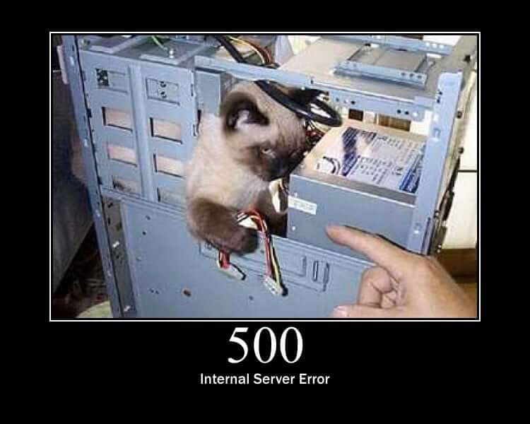

Este status http costuma aparecer quando uma requisição do tipo GET é concluida com sucesso

Este status http costuma aparecer quando uma requisição do tipo POST para entrada ou criação de dados é concluida com sucesso

Este status http costuma aparecer quando uma requisição do tipo POST ou até mesmo GET é feita com um dado faltante e se na API os erros estiverem tratados corretamente, este erro deve aparecer

Este status http costuma aparecer quando uma requisição de qualquer tipo exite algum tipo de autenticação e ela está incorreta ou não é enviada

Este status http costuma aparecer quando é feita uma requisição para um link inexistente

Este status http costuma aparecer quando algum erro não é tratado na API e ela quebra
